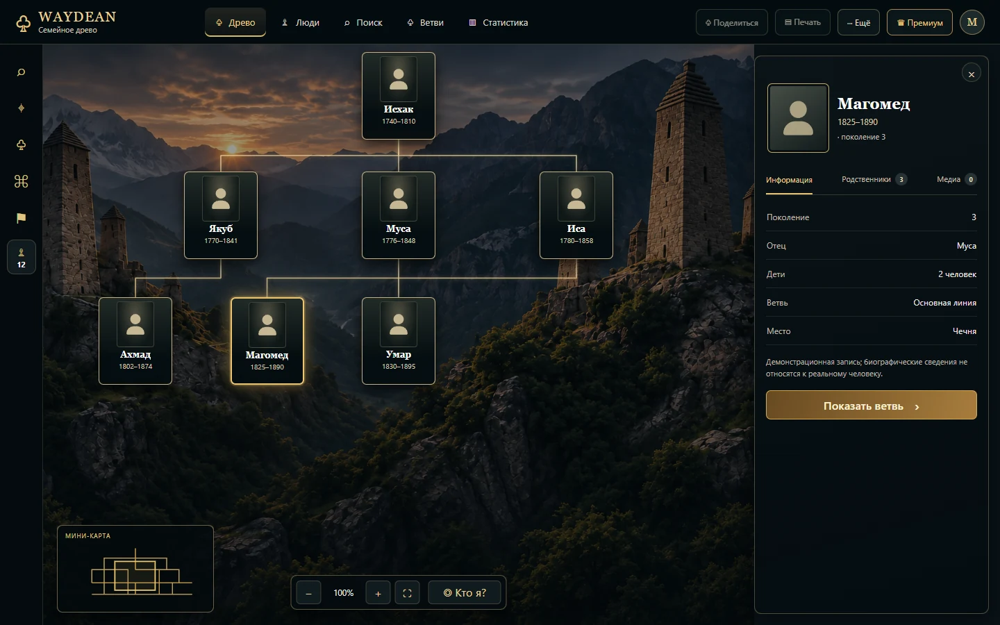
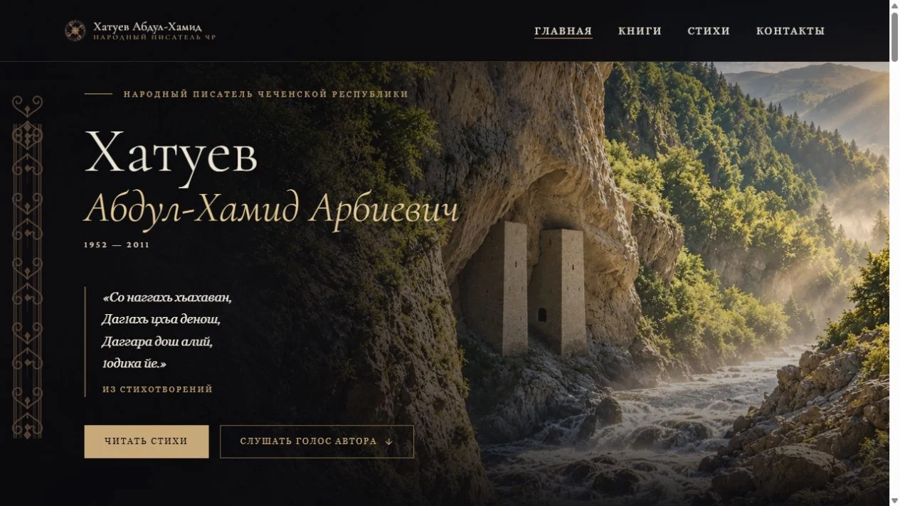
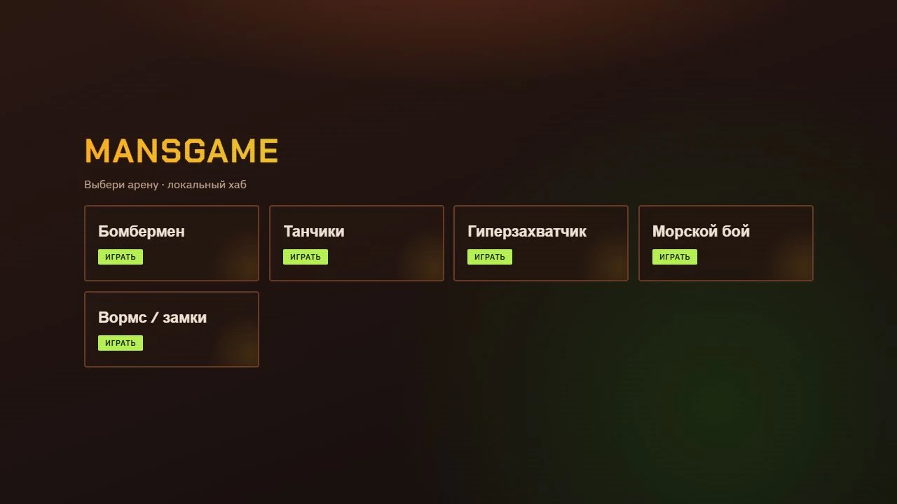
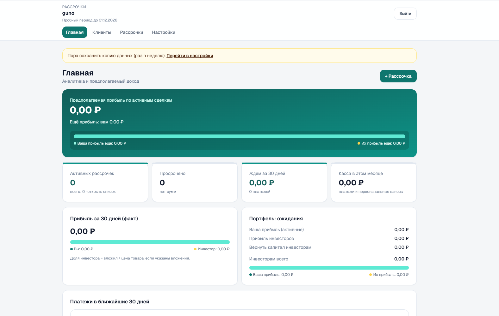

Семейная история
Древо
Семейное древо, связи поколений и истории близких — в одном пространстве.
Открыть проектЧетыре направления, над которыми я работаю: семейная история, литература, игры и сервис для учёта рассрочек.
Посмотреть проекты
Семейная история
Семейное древо, связи поколений и истории близких — в одном пространстве.
Открыть проект
Литературный архив
Страница народного писателя Чеченской Республики Абдул-Хамида Хатуева — его стихи и книги.
Открыть сайт
Игровой хаб
Хаб мини-игр с выбором арены: Бомбермен, Танчики, Гиперзахватчик, Морской бой и Вормс.
Перейти к играм
Учёт рассрочек
Сервис для учёта рассрочек в организации. На скриншоте — панель аналитики и ближайших платежей.
Открыть сервис